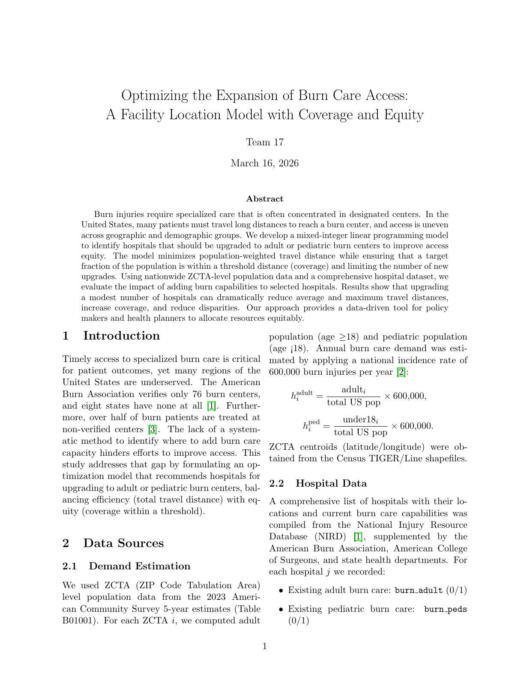
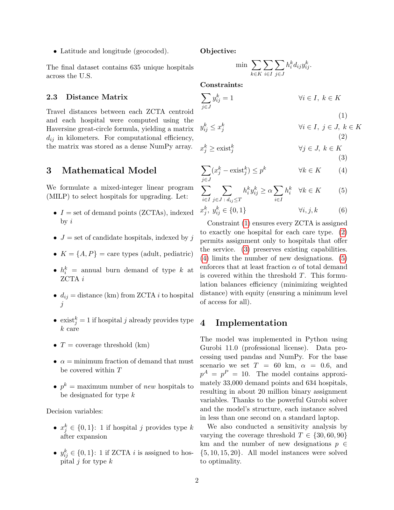
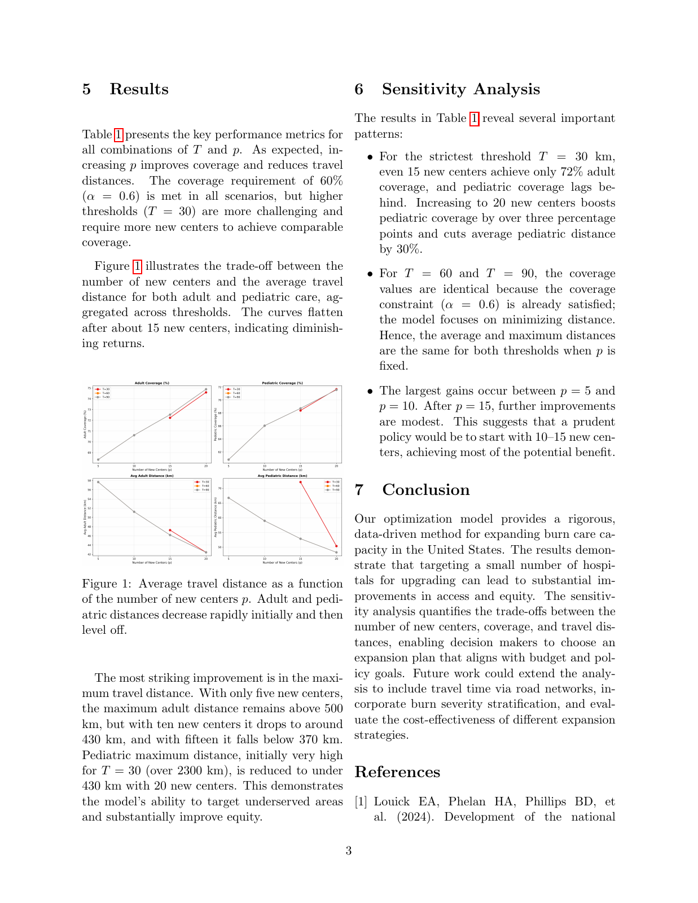
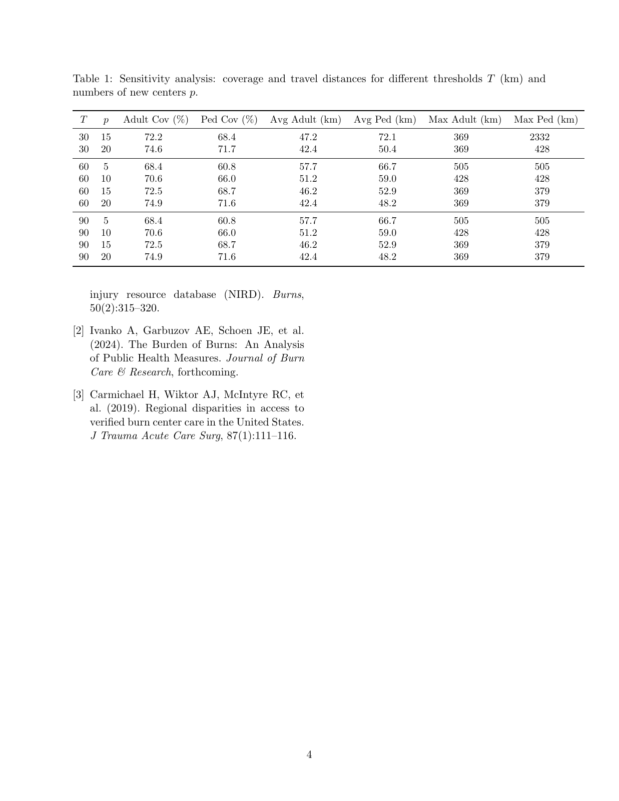

Operations research / Healthcare access
Optimizing the Expansion of Burn Care Access
A Facility Location Model with Coverage and Equity
The complete four-page report, including the mathematical model, results, sensitivity analysis, and references.
Pages are displayed as in the original PDF. Select a page to open it at full size.



